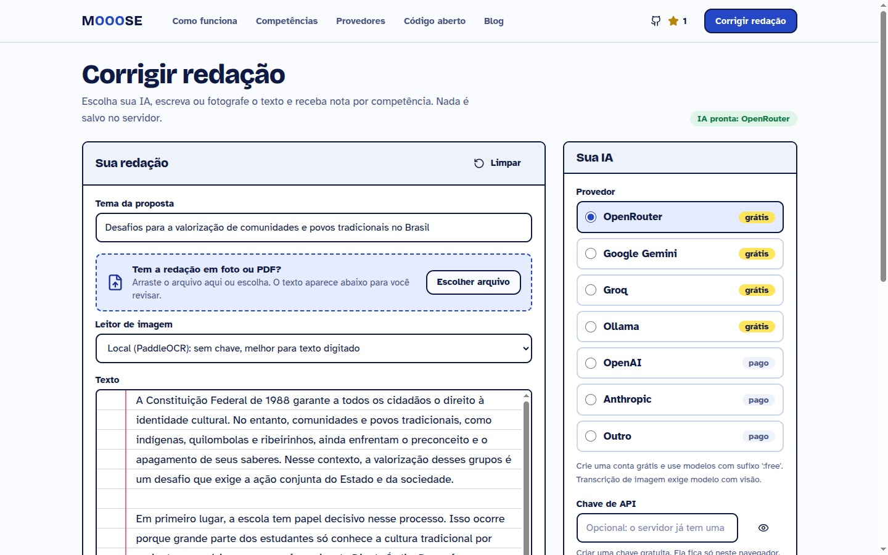
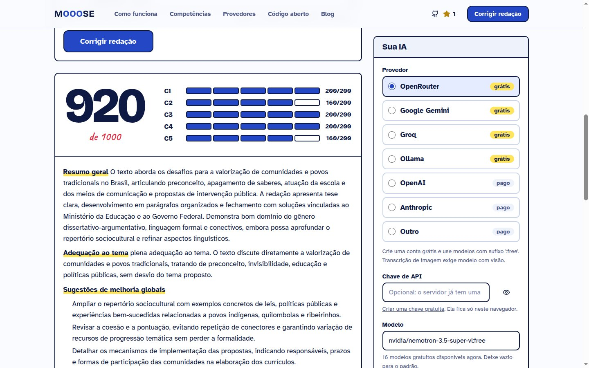

O corretor de redação do ENEM que qualquer pessoa pode melhorar.
Mooose é código aberto. Você traz a IA (tem opção grátis, até rodando no seu computador), cola o texto ou manda uma foto e recebe nota por competência. Se ele te ajudar, uma estrela leva o projeto a mais estudantes.
Apache-2.0 · Python + LangGraph + React · feito no Brasil
- 1A Constituição assegura a todos
- 2o direito à cultura, no entanto,
- 3povos tradicionais ainda enfrentam o
- 4preconceito e o apagamento cultural.
- 5Nesse cenário, a escola é decisiva:
- 6é nela que a diversidade se conhece.
- 7Dessarte, cabe ao Ministério da
- 8Educação criar campanhas escolares,
- 9por meio de aulas e palestras, a fim
- 10de combater o estigma.
Correção de redação não deveria depender de quem pode pagar
Todo ano milhões de estudantes treinam redação sem ninguém para corrigir. O Mooose junta IA e regras do ENEM em um projeto aberto, para qualquer pessoa usar, auditar e melhorar.


O que tem por dentro
Para quem gosta de ler código: um pipeline de IA de verdade, com testes, não um prompt gigante.
| Peça | Como funciona |
|---|---|
| 5 corretores | Um especialista por competência, em paralelo (LangGraph), mais um revisor que só ajusta uma nota por vez e só com incoerência clara. |
| Regras em código | Anulação, limites por tangenciamento e a nota da C5 (checklist de agente, ação, meio e finalidade) são Python testado, não palpite do modelo. |
| Traga sua IA | OpenRouter, Gemini, Groq, Ollama, OpenAI ou Claude. A chave fica no navegador e não é guardada. |
| Estabilidade | Opção de repetir cada competência e usar a mediana, para a nota variar menos em modelos gratuitos. |
| Medição | Testes sem rede e um script de avaliação contra redações corrigidas por humanos. Falta dataset: é aí que você pode ajudar. |
Rode em 2 minutos
Precisa de Docker. Sem chave? Use o perfil local e o Ollama baixa os modelos sozinho.
Dá para contribuir mesmo sem ser programador
Professores de redação, estudantes e desenvolvedores têm trabalho aqui. Abaixo, issues reais marcadas para quem está começando.
Issues para começar agora
Se o Mooose pode ajudar alguém que você conhece, mande para essa pessoa.
Uma estrela e um compartilhamento já ajudam mais do que parece.